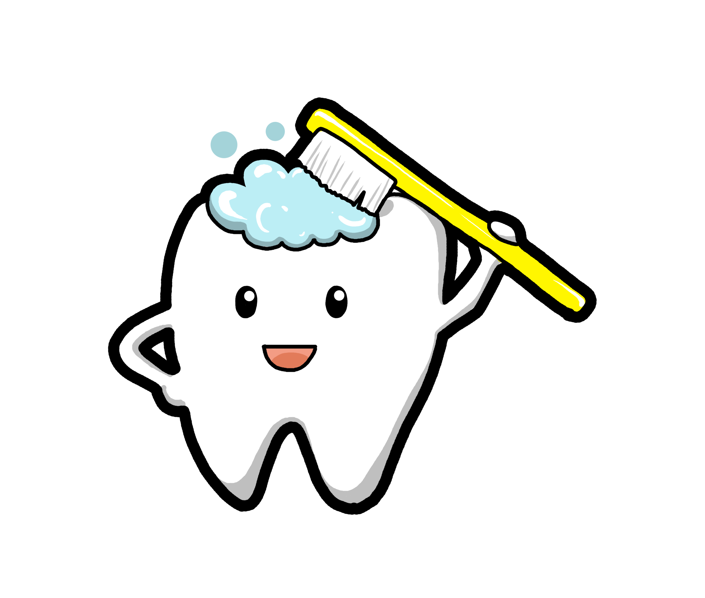

Наши услуги
Мы предоставляем все виды стоматологических услуг.УСТАНОВКА БРЕКЕТОВ
Улыбка — это универсальная валюта. Искренняя и красивая улыбка говорит собеседнику больше, чем любые другие аргументы. Если залогом успеха является красивая улыбка, то залогом красивой улыбки, конечно же, считаются прямые и ровные зубы. Однако действительно красивая улыбка не такое частое явление. Не расстраивайтесь, если она не дана от природы, в наше время с помощью специалистов можно добиться голливудской улыбки. Ортодонт выравнивает зубы, устанавливает их в правильное положение и дарит возможность человеку счастливо улыбаться без всяких комплексов.
Каппы Инвизилайн (элайнеры)
Капы INVISALIGN (элайнеры) - это чудо ортодонтии! Они не только исправят прикус, но и избавят от промежутков между зубами, подарят вам красивую неотразимую улыбку. Элайнер – это прозрачная капа, которая будет выравнивать зубной ряд, но при этом останется абсолютно незаметной на зубах. Эта современная методика бьет все рекорды по своей надежности и эффективности! Более того, капы INVISALIGN очень быстро справляются со своей задачей – в разы быстрее, чем брекеты.
ИМПЛАНТАЦИЯ ЗУБОВ
Имплантация зубов – правильный выбор при потере одного зуба! Имплантат (имплант в просторечье),
представляет собой, вживляемый металлический штифт, на который будет крепиться новый зуб. Имплантация
позволит сохранить правильный прикус и обеспечит естественное пережевывание пищи.
Опытные стоматологи – имплантологи стоматологической клиники Элим подберут и установят имплантат из
качественного материала.
Преимущества имплантации зубов:
не портит соседние здоровые зубы;
успешное эстетическое решение проблемы;
быстрое привыкание, комфортное и удобное ношение;
срок службы дольше, чем при обычном протезировании.
Чем быстрее Вы решитесь на имплантацию, тем лучше!
Улыбайтесь, не стесняясь своей улыбки!

Отбеливание зубов
«Никогда не переставай улыбаться, даже когда тебе грустно… Кто-то может влюбиться в твою улыбку!», - так
говорил Габриэль Гарсиа Маркес. Отбеливание зубов – это еще один прекрасный метод сделать вашу улыбку еще
краше.
Если
вы хотите подарить своим зубам белоснежный эффект, то можете прибегнуть к отбеливанию зубов. На сегодняшний
день существует много различных способов проведения данной процедуры. Если говорить о самом бюджетном
варианте, то это однозначно будет химическое отбеливание. Стоматолог создает для вас специальные полимерные
каппы, наполненные отбеливающим составом. Основа данного раствора – это перекись водорода. Такие каппы
рекомендуют носить дома по два-три часа в день. Если такой возможности нет, то каппы можно надевать на ночь.
Происходит следующая химическая реакция – перекись водорода начинает разлагаться, выделяются атомы
кислорода, которые напрямую воздействуют на пигмент зубов, осветляют его. Но химическое отбеливание зубов
подходит далеко не всем. Если у вас проблемные зубы, то вам нужно прибегать к более щадящим методам.
ДЕТСКАЯ СТОМАТОЛОГИЯ
Детская ортодонтия
Особую роль в детской стоматологии играет детская ортодонтия, так как исправлять прикус и выравнивать зубы
лучше всего в детстве. Кроме того, в детском возрасте возможны профилактические мероприятия, направленные на
предотвращение развития неправильного прикуса постоянных зубов.
Направления отделение детской стоматологии:
- лечение молочных зубов
- удаление молочных зубов
- ортодонтическое лечение
- серебрение зубов у детей
ЭСТЕТИЧЕСКАЯ РЕСТАВРАЦИЯ ЗУБОВ
Процесс создания новой улыбки – это настоящее искусство. Художественная реставрация зубов может включать в
себя не только исправление формы зуба, но и подбор красивого и здорового цвета эмали, который будет
смотреться естественно.
Если Вы не довольны внешним видом своих зубов и хотите, наконец, чувствовать себя уверенно, специалисты
стоматологической клиники «Элим» исправят ситуацию, и Ваша улыбка засияет здоровьем и красотой!
Профессионализм наших специалистов, современное оборудование и лучшие материалы – эти три составляющие
являются залогом успешной реставрации зубов в нашей клинике.
О нас

Наша клиника – это гарантия качественного, безболезненного лечения и всегда отличный результат, который будет радовать Вас и Ваших близких очень долгое время. Элим – это не только светлые и уютные медицинские кабинеты, приветливый персонал, но и коллектив врачей, признанных профессионалов своего дела. Все специалисты стоматологий проходят ежегодное профессиональное обучение на новом медицинском оборудовании и заканчивают курсы повышения квалификации.